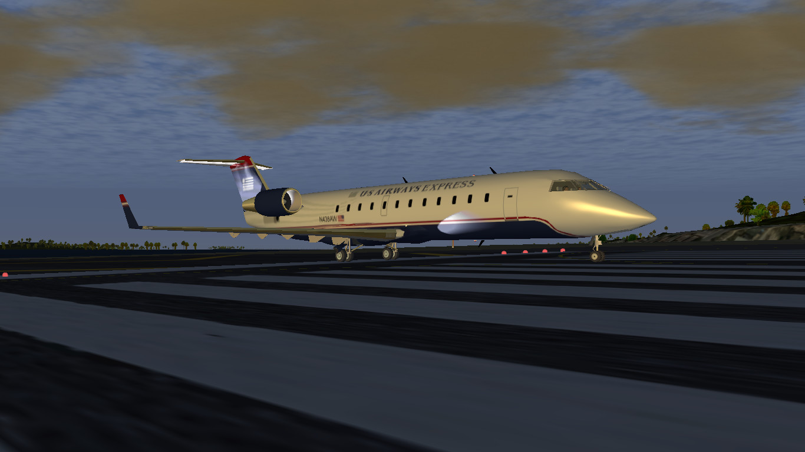
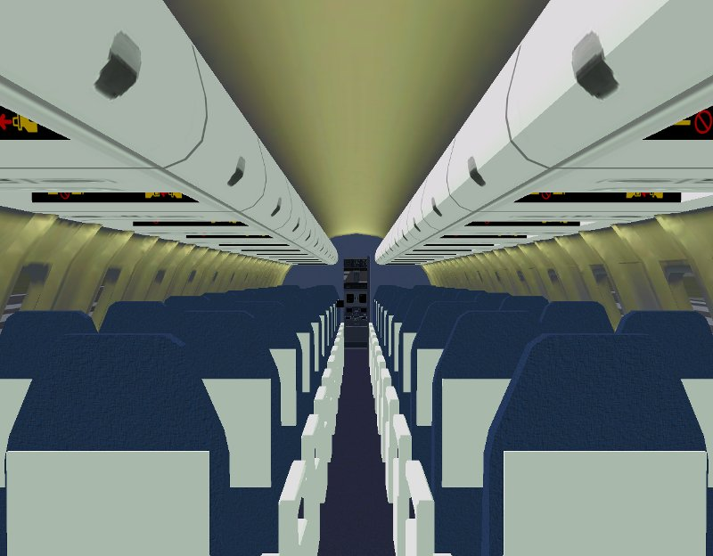
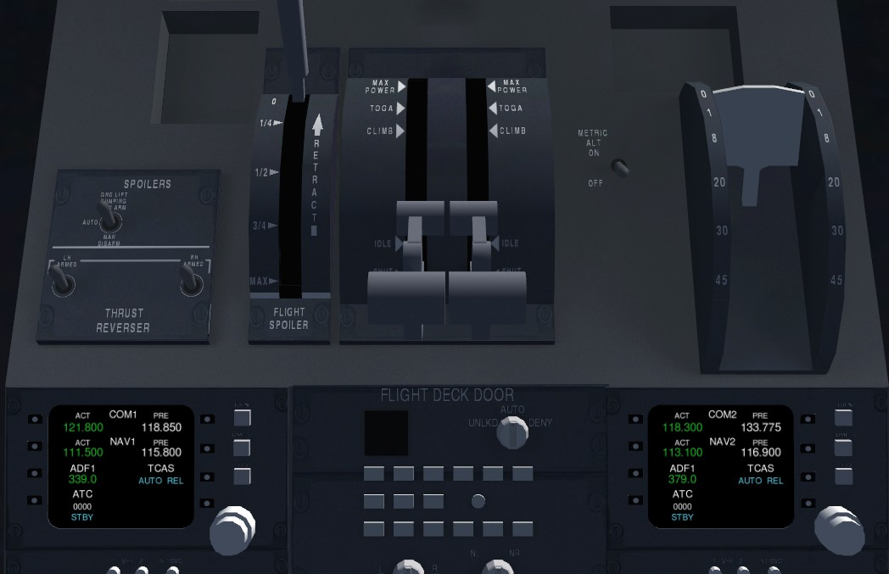
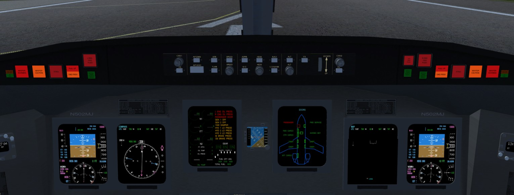

This small document describes various aspects of the Bombardier CRJ700 series in FlightGear, particularly the cockpit. While it does not describe the aircraft in full detail and certainly does not reflect the real CRJ700, it is intended as an introductory and reference guide pointing out things the casual simmer might miss.
The Bombardier CRJ700 series consists of the CRJ700, CRJ900, and CRJ1000. The family targets the 70- to 100- seat regional aircraft market, stemming from Bombardier's CRJ100 and CRJ200. The series' primary competition is the Embraer E-jet family.
FlightGear Flight Simulator includes the following CRJ700 family members:
If you've already flown the plane and cycled the views, you may have noticed the interior cabin, shown here with night lighting effects.

The overhead bins can be opened and closed (together, not individually) simply by clicking on them, as well as the cockpit door. The "no smoking" and "fasten seatbelt" signs can be toggled using the switches in the cockpit or in the lighting dialog. Cabin lighting is also controlled via the lighting dialog. Note that none of these lights will work if the electrical system is not powered.
Tip: Press Ctrl-C in the simulator to see what objects are clickable.
Another tip: The yokes have a tendency to get in the way of flying, or just browsing around. You can show and hide them by clicking on the bases or by using the menu item in the aircraft menu.
The first thing you will notice about the cockpit is the instruments. The CRJ700 includes 4 of them. In this image, left to right, they are the PFD ("Primary Flight Display"), the MFD ("Multi-Function Display"), the EICAS ("Engine Indication and Crew Alert System"), and the standby instrument. The MFD and EICAS have additional pages that can be viewed by clicking on the left and right sides of the little control pads on the borders.
The standby instrument is a combined altimeter/attitude/airspeed/ILS display to be used in the event the other displays fail- say, an electrical failure. The attitude indicator must be periodically "recharged" by clicking the "CAGE" button (this is not done automatically by the electrical system). In reality, this must be done flying straight and level and probably doesn't have to be done so often, but I have not yet found a practical way to simulate this properly in FG. The "+" and "-" buttons adjust the brightness of the display, and the knob adjusts the barometer setting of the instrument's altimeter.
On the side, you have the two side panels and the clock.

On the left side panel (this is the copilot's side; on the pilot's side, the panel positions will be flipped), you have various knobs for controlling the instruments. The format and range knob scrolls through the pages of the respective MFD and adjusts the radar range (the outer knob is the format knob, the inner is the range). The left "RDR/TERR" button turns the radar and terrain display on/off (read: terrain display not implemented) and the right "TFC" button turns the TCAS and traffic display on/off. The NAV source knob cycles through the navigation modes displayed on the PFD and used by the autopilot (see the autopilot document for further information).
The other side panel has controls for lighting, wipers, and the stall protection system. The display knob adjusts the brightness of the LCD displays in the cockpit. The "integ" knob adjusts the brightness of the "integrated panel lighting"- that's the markings on the panels that glow. (Note: The overhead panel has a separate knob on the panel itself for its integrated lighting.) Finally, the flood knob adjusts the panel flood lighting. The floor lighting and stall protection system are not implemented.
The wiper system behaves just like one you'd find in an automobile. Clicking the switch increases the setting and middle-clicking decreases it.
The clock is a neat little gizmo that helps keep track of time. Every knob is implemented. "MODE" cycles through the display modes for the upper line:
The real CRJ700's clock has an additional mode for syncing with time-keeping satellites, but this is not implemented for obvious reasons.
The lower display shows "elapsed time"- which is basically a chronometer that times your flight from takeoff to landing. However, clicking the "CHR" button will switch it to chronometer mode, a timer that you can operate. Clicking the same button will start and stop the chronometer, and middle-clicking it will reset it. The chronometer's time is auto-saved by FG every time you quit. Clicking the "SEL" button will switch the display back to elapsed time mode (this is a one-way button, you must click "CHR" again to get back to chronometer mode). The "RST" button will reset the elapsed time counter, but this can only be done on the ground.
In the middle of the cockpit, you have the center pedestal.

The pedestal contains many buttons, switches, and controls- some of which work in FG. Starting from the top, you have the gear lever, which raises and lowers the landing gear. The ground proximity buttons mute the terrain and flaps callouts by the GPWS. The spoiler and thrust reverser panels control the ground spoilers and thrust reversers, and the adjacent lever controls the flight spoiler/speedbrake (see the "slowing down" section below). The throttle quadrant controls the engines (see the "power plant" section), and the large control on the right deploys the flaps and slats. The tiny switch buried in between them is the metric altitude switch. When turned on, altitude displays on the PFD and MFD switch from feet to meters.
On the bottom, the radio panels control the radio stack. (Press some buttons and move the knobs to get an idea of how it works.) Further down is another lighting panel, and not shown by this image are the yaw damper controls. (See the autopilot document for more information.)
Tip: Selecting a standby frequency twice using the buttons will swap it with the active frequency.
On the glareshield, you'll find warning lights and the MCP ("Mode Control Panel"). The MCP controls the autopilot, which you can read about in that other document.

The "master warning" and "master caution" lights are self-explanatory. The stall light would light up during a stall if the stall protection system was implemented. The "pull up"/"gnd prox" light illuminates when the GPWS system issues an alert. Finally, you have the engine fire controls. (See "in case of emergency...")
The copilot-side glareshield is nearly a mirror of the pilot's side, but the fire controls are for engine 2 and the APU fire controls also reside there.
The CRJ700 features basic FADEC simulation. In real life, each engine is equipped with a FADEC computer that regulates it based on input from the pilot, as well as specific thrust modes that can be selected. The CRJ700 in FG models the following thrust modes (as the flight crew manual is extremely vague about these modes, they are not necessarily accurate):
These thrust modes can be cycled by middle-clicking the thrust levers for each engine, or by pressing Ctrl-T. The current thrust mode(s) appears on page 1 of the EICAS beside the N1 readout.
Need to steepen your descent path or lose speed quickly in the air? The CRJ700 is equipped with flight spoilers (more commonly called speedbrakes) with four settings: 25%, 50%, 75%, and 100%/max. You can control the speedbrakes by pressing Ctrl-B to cycle through these settings or by using the control on the pedestal.
The CRJ700 has 3 ways to slow down during a landing; ground spoilers, thrust reversers, and wheel brakes. The ground spoilers are automatically controlled by the flight computer, but can be armed and disarmed manually using the "ground lift dump" switch on the pedestal. The thrust reversers redirect airflow from the engines forward to slow the airplane down. After being armed (press Ctrl-Delete or use the switches on the thrust reverser panel), they are deployed using the Delete key and controlled by your throttle. (Throttle must be at idle to engage or cancel reverse thrust.) Thrust reversers should not be used below 60 knots. The wheel brakes are regular brakes on the wheels and are controlled by your joystick or the b key.
Tip: You can find a failures dialog in the aircraft menu, controlling engine fires, APU failures, the autopilot, and more.
On the glareshield, the large red engine fire light illuminates when the respective engine is on fire; pushing it will arm the extinguishing system, which is activated and deactivated using the green button below it. When the extinguishers are activated, "L/R ENG EXTINGUISH" will appear on page 2 of the EICAS.
In case you lose all ability to generate electrical power- running out of fuel, for instance, the CRJ700 is equipped with a ram air turbine. To deploy it, look for the control in the "air cond" section of the overhead panel. Click the cover to open it up and press the button to deploy it. After a few seconds, the turbine should spool up and begin providing electrical power for the aircraft. "RAM AIR TURBINE" appears on page 2 of the EICAS when the turbine is deployed. Note that electrical power will decrease as you slow down and less force spins the turbine.